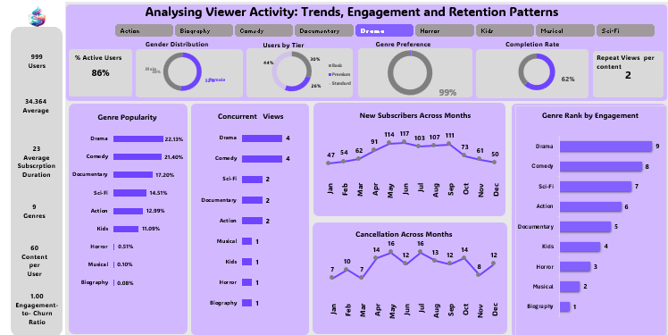

Stream wave multimedia analytics

Overview
Excel-based analytics dashboard analysing multimedia performance to identify high-performing genres and optimise budget allocation strategy.
Built with Excel and Streamlit, Streamwave analytics app integrates interactive visualizations, and a context-aware chatbot to provide real-time insights, recommendations to optimise resource allocation in a multimedia context.
Key Goals & Features
- Automated Cleaning: drastically reduces the 50–80% of project time usually spent on data cleaning.
- AI Narrator: Generates AI-driven narratives, highlighting trends, anomalies, and correlations automatically.
- Gamification: Includes a dynamic achievement system for process completion and milestones.
- Interactive Chatbot: A data-aware assistant that answers free-text queries about the dataset.
StreamWave Multimedia: System Documentation
1. Purpose of the app
Stream wave multimedia dashboard addresses the common challenge in the mulitmedia industry: 50–80% of project time is consumed by data cleaning, formatting, and preprocessing. This system automates repetitive tasks while providing intelligent guidance, enabling analysts to focus on insight generation, modeling, and decision-making.
2. Key Features Deep Dive
Interactive AI-Powered Data Story Narrator
The system generates AI-driven narratives for datasets, highlighting trends, anomalies, correlations, and data quality issues. It supports visual analytics (histograms, scatter plots, heatmaps) and scenario simulation.


Pipeline Summary Dashboard
Tracks preprocessing activities in real-time, displaying statistics, progress, and AI summaries.


Milestones & Achievements
A unique gamification layer with dynamic achievements for process completion, dataset downloads, and advanced preprocessing.

Chatbot Integration
Fully data-aware: answers free-text queries about the dataset and preprocessing steps, provides navigation support, and triggers actions.

3. Core Functionalities
The system covers the entire preprocessing lifecycle:


4. Technology Stack
| Component | Tools / Libraries |
|---|---|
| Frontend | Streamlit |
| Data Processing | Pandas, NumPy |
| Machine Learning | Scikit-learn |
| Visualizations | Plotly, Seaborn |
| Text Processing | NLTK, TextBlob |
| File Handling | OpenPyXL, JSON |
5. Quick Start Workflow
Step 1: Upload Data
Support for CSV, Excel, JSON, SQL, APIs, and Cloud sources.
Step 2: Profile & Analyze
Auto-detection of types, insights generation, and quality assessment.
Step 3: Clean & Process
Auto-suggestions for fixes, one-click repairs, and manual overrides.
Step 4: Export & Share
Download clean datasets, pipeline reports, and reproducible Python code.
6. Why KlinItAll?
“Nearly 60–80% of time in data projects is consumed by cleaning, formatting, and fixing datasets. KlinItAll automates tedious preprocessing, allowing data scientists to focus on insights and model building.”

7. Future Enhancements
- Collaboration: Multi-user collaborative workflows with real-time updates.
- Security: Role-based access control and personalized logins.
- Audit: Logging for reproducibility and research compliance.